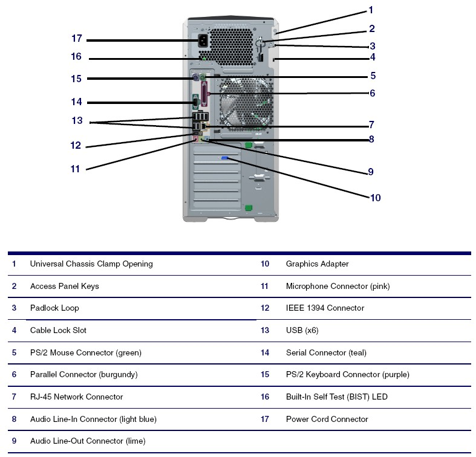
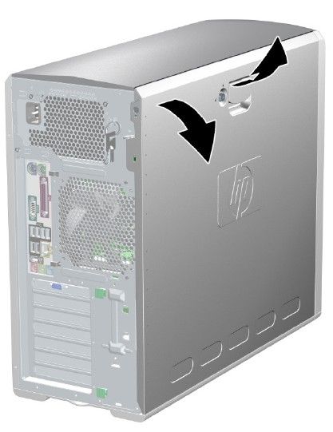

Operating Documentation
Direction 5133315-3, Rev# 14
Signa EXCITE HD 1.5T Service Methods
Module Version 1.0, Version Date 6/23/09
Operating Documentation |
| Required Persons | Preliminary Reqs | Procedure | Finalization |
|---|---|---|---|
| 1 | Not Applicable | 2 hours | 30 mins |
This procedure describes and illustrates the steps necessary to replace lower level FRUs in the HP xw8200 Host PC.
| Item | Qty | Effectivity | Part# | Manufacturer | |
|---|---|---|---|---|---|
| HP Diagnostics Tool | 1 | - | 5328192 | - | |
| Standard FE Toolkit | 1 | - | - | - | |
| 4 mm Hex Key Wrench | 1 | - | - | - | |
| Item | Qty | Effectivity | Part# | Manufacturer | |
|---|---|---|---|---|---|
| See individual replacement procedures for specific parts requirements. | - | - | - | ||
| ||||
| ELECTROCUTION HAZARD | ||||
| HIGH VOLTAGE PRESENT | ||||
| USE PROPER LOCKOUT / TAGOUT PROCEDURES BEFORE REPLACING THE COMPONENTS. |
| ||||
| POTENTIAL FOR INJURY TO SERVICE PERSONNEL | ||||
| HOST COMPUTER CHASSIS CAN WEIGH IN EXCESS OF 40 POUNDS. | ||||
| DEPENDING ON YOUR HEIGHT AND ACCESS TO EQUIPMENT REMOVAL/INSTALLATION, LIFTING ASSISTANCE MAY BE REQUIRED. USE YOUR JUDGMENT TO DETERMINE IF LIFT ASSIST OR A SECOND PERSON IS REQUIRED TO ASSIST IN REMOVAL AND INSTALLATION. |
| ||||
| FOLLOW ALL REQUIRED SAFETY AND PPE PROCEDURES CUSTOMARY FOR YOUR ORGANIZATION WHEN WORKING ON THIS PRODUCT. | ||||
| Condition | Reference | Effectivity |
|---|---|---|
Access to both the front and rear of the Operator Console is required. Move the console away from walls and remove obstacles in room. | - | - |
Only trained service personnel should service the GE Scanner. | - | - |
Select one of the following methods to power off the Operator Console:
If Applications are running, click [Shut Down] on the desktop and select the Shutdown option.
If Applications are down, open a Unix Shell using the Toolchest and type: {ctuser@hostname} > halt > [Enter].
The Operator Console monitor will display a System Halted message when it is acceptable to power off the Operator Console.
Power OFF the Operator Console at the front panel switch.
Make sure to follow all Lockout/Tagout requirements while performing this procedure. For added protection, disconnect the Twist-N-Lock Main Power Cable from the rear of the console.
Remove the front and rear Operator Console covers.
Remove the cable connections to the HP xw8200 Host Computer chassis.
| NOTE: | Verify that all cables are labeled and clearly marked. If necessary, add a label for clarity. |
Remove the power cord at the rear of the Host Computer chassis.
Remove the four (4) 5 mm socket-cap mounting screws from the front of the Host Computer, holding the computer to the Operator Console.
Slide the Host Computer forward (out the front of console) and set aside.
If necessary, unlock the access panel using the keys located in the rear of the workstation (Item 2 in Illustration 1).
Illustration 1: Keys in Rear of Workstation

Once unlocked, pull up on the handle and lift off the access panel cover (Illustration 2).
Illustration 2: Access Panel Cover Removal

Follow the steps in HP8200 Memory Module Replacement for replacing Memory Modules in the HP xw8200 Host Computer. Return to this procedure when finished.
Continue with Reinstalling HP xw8200 Host Computer in Operator Console of this document.
Follow the steps in HP8200 DVD Optical Drive Replacement for replacing DVD Optical Drive in the HP xw8200 Host Computer. Return to this procedure when finished.
Continue with Reinstalling HP xw8200 Host Computer in Operator Console of this document.
Follow the steps in HP8200 Hard Drive Replacement for replacing Hard Disk Drive in the HP xw8200 Host Computer. Return to this procedure when finished.
If the OS Disk HDD was replaced, it will be necessary to perform a Load from Cold (LFC) to reinstall Host OS and Application Software. Follow appropriate LFC procedure for the system on which this HDD is installed.
| NOTE: | The LFC procedure will erase and recreate the Image Database located on the Image HDDs. |
Slide the HP xw8200 Host Computer into the Operator Console from the front.
Replace the four (4) 5 mm socket-cap mounting screws to secure the Host Computer chassis to the Operator Console right side compartment, and torque to 4.6 Nm.
Mount the power cord to the rear of the Host Computer chassis, and verify that its power switch on the Host Computer’s Power Supply is turned to the ON position.
Replace the rear cable connections.
Reconnect the Twist-N-Lock Main Power Cable from the rear of the console, and remove Lock Out Tag Out protection applied earlier.
Power ON the Operator Console at the console’s front panel switch.
Visually verify that the Host Computer front panel Power LED is illuminated. If not, press the Host Computer front panel power switch to apply power to the Host Computer.
Run HP Linux PC Service Diagnostics using the HP Diagnostics Tool.
Reboot, and ensure that no memory BIOS errors are observed during the boot process.
Take some scans, and verify that the image(s) reconstruct and display.
Check that all customer functions are operational (auto voice, filming, network, archive).
Reinstall console front and rear covers.